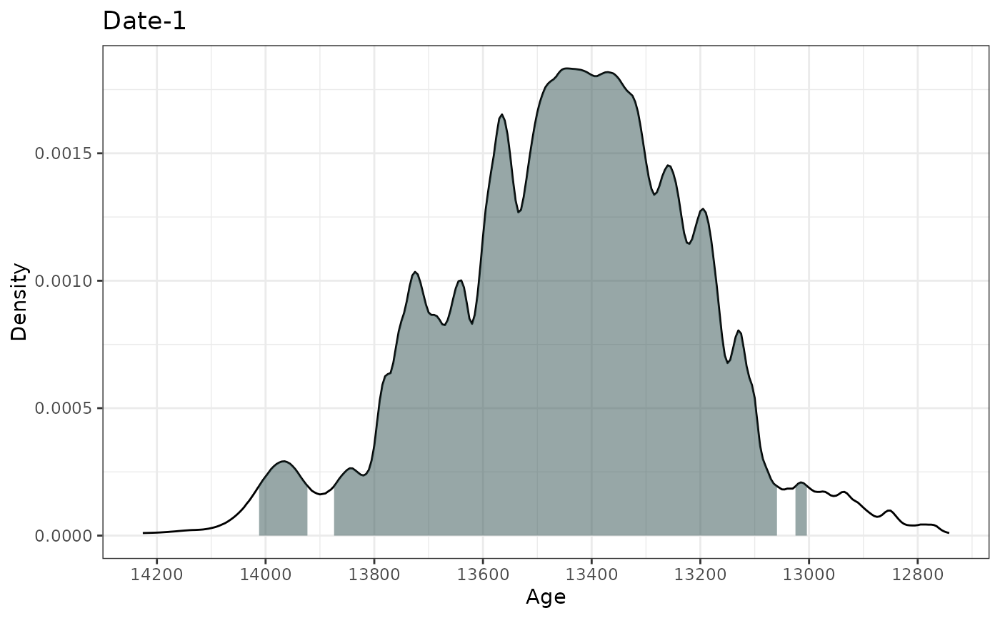
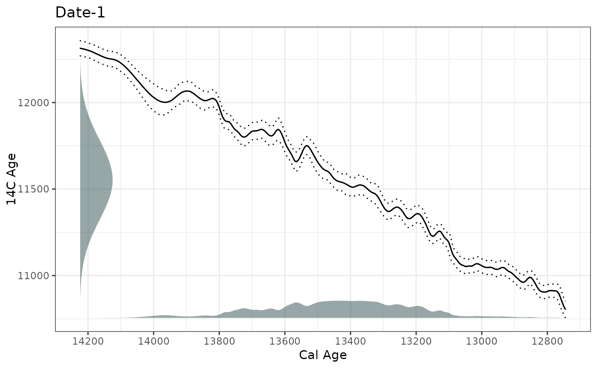
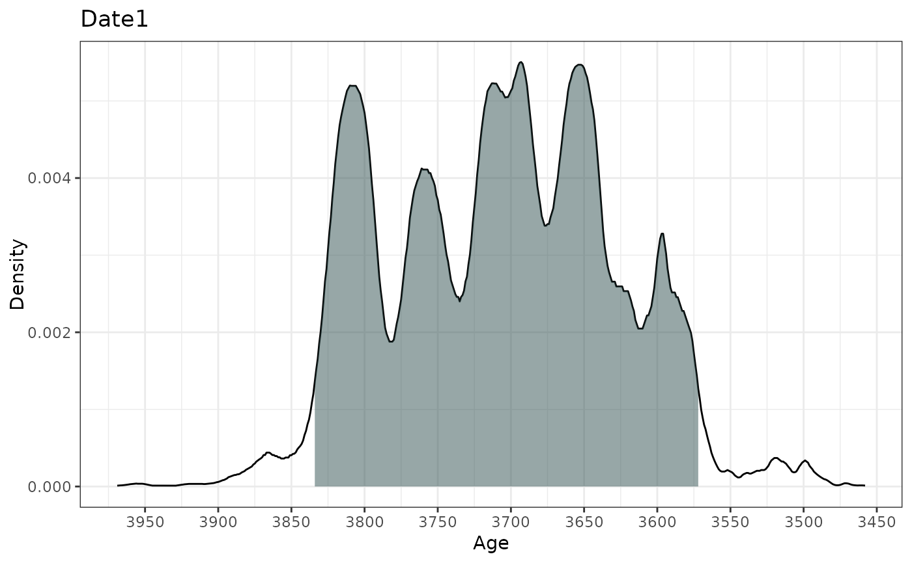
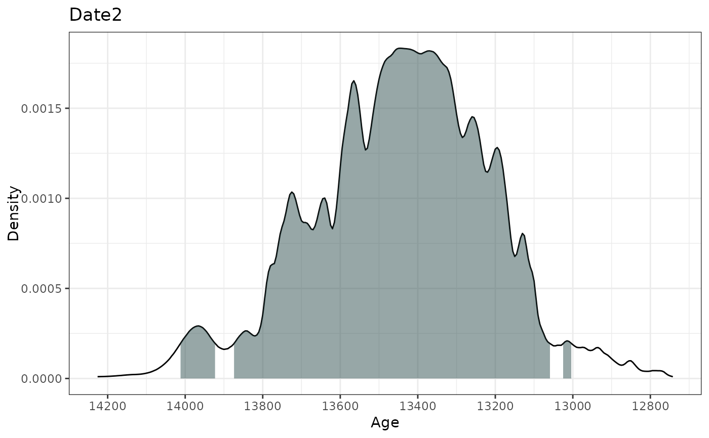
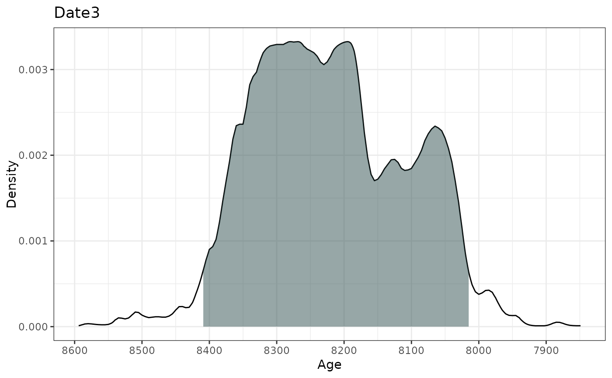
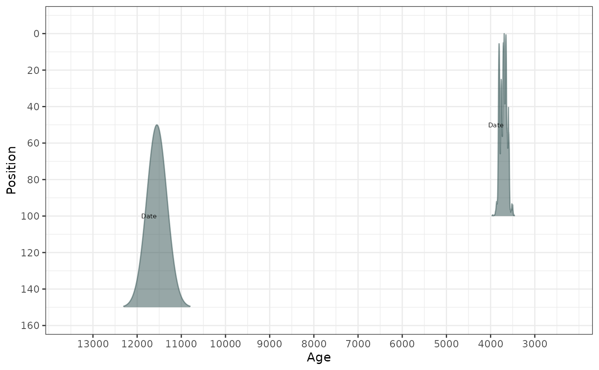

A fast function for calibrating large numbers of radiocarbon dates involving multiple calibration curves
BchronCalibrate(
ages,
ageSds,
calCurves = rep("intcal20", length(ages)),
ids = NULL,
positions = NULL,
pathToCalCurves = system.file("data", package = "Bchron"),
allowOutside = FALSE,
eps = 1e-05,
dfs = rep(100, length(ages))
)A vector of ages provided in years before 1950.
A vector of 1-sigma values for the ages given above
A vector of values containing either intcal20, shcal20, marine20, or normal (older calibration curves are supposed such as intcal13). Should be the same length the number of ages supplied. Non-standard calibration curves can be used provided they are supplied in the same format as those previously mentioned and are placed in the same directory. Normal indicates a normally-distributed (non-14C) age.
ID names for each age
Position values (e.g. depths) for each age. In the case of layers of non-zero thickness, this should be the middle value of the slice
File path to where the calibration curves are located. Defaults to the system directory where the 3 standard calibration curves are stored.
Whether to allow calibrations to run outside the range of the calibration curve. By default this is turned off as calibrations outside of the range of the calibration curve can cause severe issues with probability ranges of calibrated dates
Cut-off point for density calculation. A value of eps>0 removes ages from the output which have negligible probability density
Degrees-of-freedom values for the t-distribution associated with the calibration calculation. A large value indicates Gaussian distributions assumed for the 14C ages
A list of lists where each element corresponds to a single age. Each element contains:
The original age supplied
The original age standard deviation supplied
The position of the age (usually the depth)
The calibration curve used for that age
A grid of age values over which the density was created
A vector of probability values indicating the probability value for each element in ageGrid
The label given to the age variable
The label given to the position variable
This function provides a direct numerical integration strategy for computing calibrated radiocarbon ages. The steps for each 14C age are approximately as follows: 1) Create a grid of ages covering the range of the calibration curve 2) Calculate the probability of each age according to the 14C age, the standard deviation supplied and the calibration curve 3) Normalise the probabilities so that they sum to 1 4) Remove any probabilities that are less than the value given for eps Multiple calibration curves can be specified so that each 14C age can have a different curve. For ages that are not 14C, use the 'normal' calibration curve which treats the ages as normally distributed with given standard deviation
# Calibrate a single age
ages1 <- BchronCalibrate(
ages = 11553,
ageSds = 230,
calCurves = "intcal20",
ids = "Date-1"
)
summary(ages1)
#> 95% Highest density regions for Date-1
#> $`0.4%`
#> [1] 13004 13025
#>
#> $`77.9%`
#> [1] 13059 13874
#>
#> $`16.4%`
#> [1] 13923 14012
#>
#>
plot(ages1)

# Or plot with Calibration curve
plot(ages1, includeCal = TRUE)

# Calibrate multiple ages with different calibration curves
ages2 <- BchronCalibrate(
ages = c(3445, 11553, 7456),
ageSds = c(50, 230, 110),
calCurves = c("intcal20", "intcal20", "shcal20")
)
summary(ages2)
#> 95% Highest density regions for Date1
#> $`94.4%`
#> [1] 3572 3834
#>
#>
#> 95% Highest density regions for Date2
#> $`0.4%`
#> [1] 13004 13025
#>
#> $`77.9%`
#> [1] 13059 13874
#>
#> $`16.4%`
#> [1] 13923 14012
#>
#>
#> 95% Highest density regions for Date3
#> $`94.6%`
#> [1] 8015 8409
#>
#>
plot(ages2)
#> [[1]]

#>
#> [[2]]

#>
#> [[3]]

#>
# Calibrate multiple ages with multiple calibration curves and including depth
ages3 <- BchronCalibrate(
ages = c(3445, 11553),
ageSds = c(50, 230),
positions = c(100, 150),
calCurves = c("intcal20", "normal")
)
summary(ages3)
#> 95% Highest density regions for Date1
#> $`94.4%`
#> [1] 3572 3834
#>
#>
#> 95% Highest density regions for Date2
#> $`94.7%`
#> [1] 11100 12005
#>
#>
plot(ages3, withPositions = TRUE)
